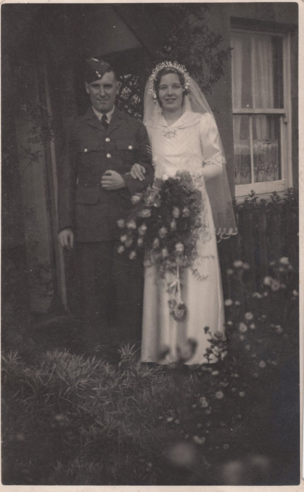
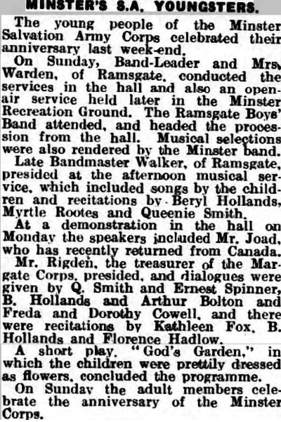
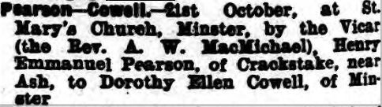
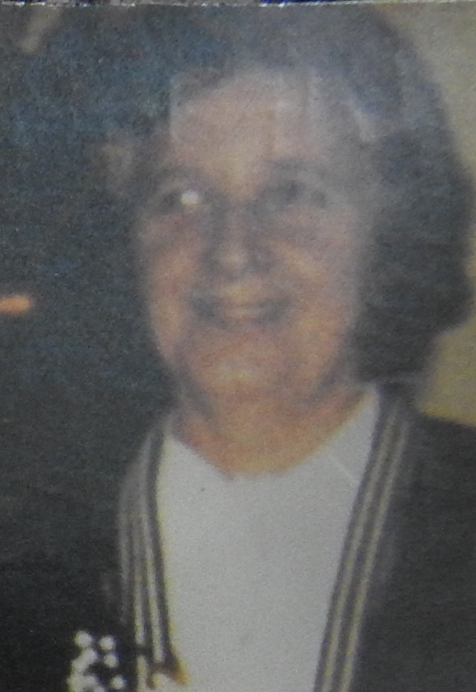
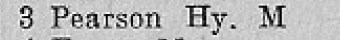
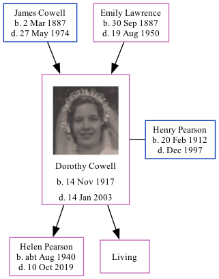

Dorothy Helen Pearson (née Cowell) 1917 - 2003
[ Home ] | [ Calendar ] | [ Surnames Index ] | [ Family History ]The daughter of James Cowell (a seaman collier with the whitstable shipping company) and Emily Lawrence, Dorothy Cowell, (also known as Dolly Cowell) the aunt of <a href="I1.html">Nigel Horne</a>, was born in Sutton, Kent, England on Nov 14, 1917<span class="citation">1,2,3,4,5</span> and married Henry Pearson (with whom she had 2 children: <a href="I290.html">Helen Anne</a> and <a href="I289.html">Jill</a>, along with 1 surviving child) at St Mary's Church, Minster, Thanet, Kent, England on Oct 21, 1939<span class="citation">6</span>.</p><p>Throughout her life, she lived at 7 Pouces Cottages, Minster in Thanet on Jun 19, 1921<span class="citation">1</span> and on Sep 29, 1939<span class="citation">2</span>; and on 3 Laundry Road, Minster in Thanet in 1965<span class="citation">7</span>. <p>She died on Jan 14, 2003 in Herne Bay, Kent<span class="citation">5</span>.
Parents
- James Frederick was born on Mar 2, 1887
- Emily Jane was born on Sep 30, 1887
Children
- Helen Anne was born c. Aug 1940
Citations
- 1921 Census Of England & Wales - Findmypast (was age 3 and the daughter of the head of the household)
- 1939 Register - Findmypast (was recorded at this address)
- England & Wales deaths 1837-2007 - Findmypast
- England & Wales, Birth Index: 1916-2005 Online publication - Provo, UT, USA: The Generations Network, Inc., 2008.Original data - General Register Office. England and Wales Civil Registration Indexes. London, England: General Register Office. © Crown copyright. Published by permission of the Cont
- England & Wales, Death Index: 1984-2005 Online publication - Provo, UT, USA: The Generations Network, Inc., 2007.Original data - General Register Office. England and Wales Civil Registration Indexes. London, England: General Register Office. © Crown copyright. Published by permission of the Cont
- England & Wales, Marriage Index: 1916-2005 Online publication - Provo, UT, USA: The Generations Network, Inc., 2009.Original data - General Register Office. England and Wales Civil Registration Indexes. London, England: General Register Office. © Crown copyright. Published by permission of the Cont
- 1965 Kelly's Thanet Directory
Media
Dorothy Cowell - Henry Pearson - marriage

Dorothy Cowell
Thanet Advertiser 19 Jul 1929

Thanet Advertiser 27 Oct 1939

Dorothy Cowell - 2

1965 Kelly's Thanet Directory

England & Wales marriages 1837-2008 - BMD/M/1939/4/AO/000391/014
England & Wales births 1837-2006 - BMD/B/1917/4/AZ/000233/080
England & Wales deaths 1837-2007 - BMD/D/2003/1/85663515
1939 Register Transcription - TNA-R39-1820-1820G-008-33
1939 Register Transcription - TNA-R39-1820-1820G-008-31
Family Tree
Generated by Ged2Site. Last updated on Jul 20, 2025